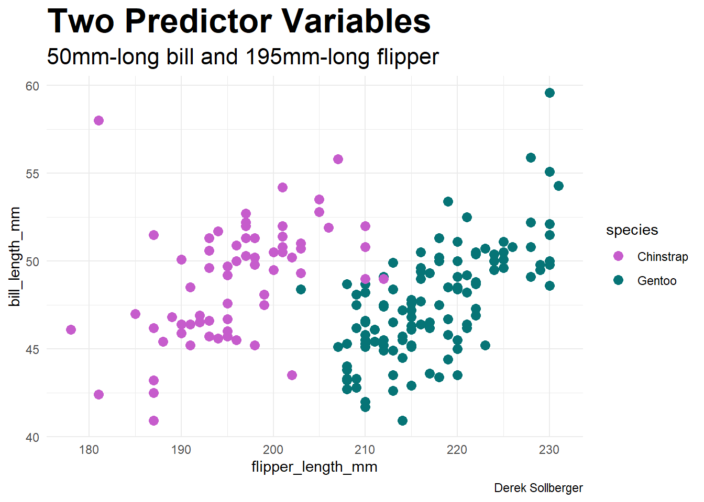
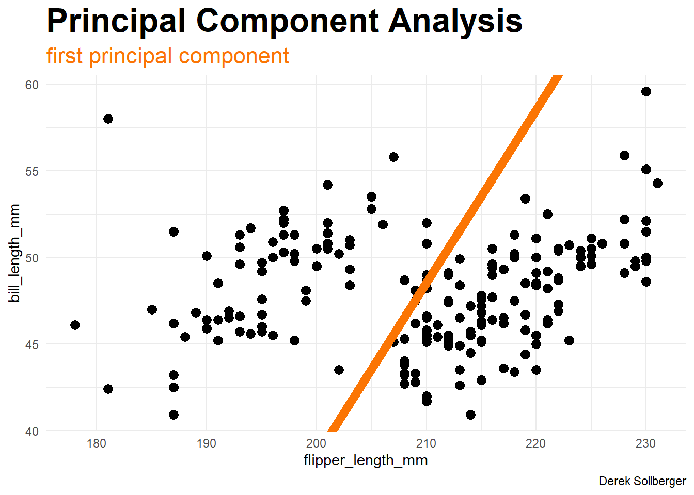
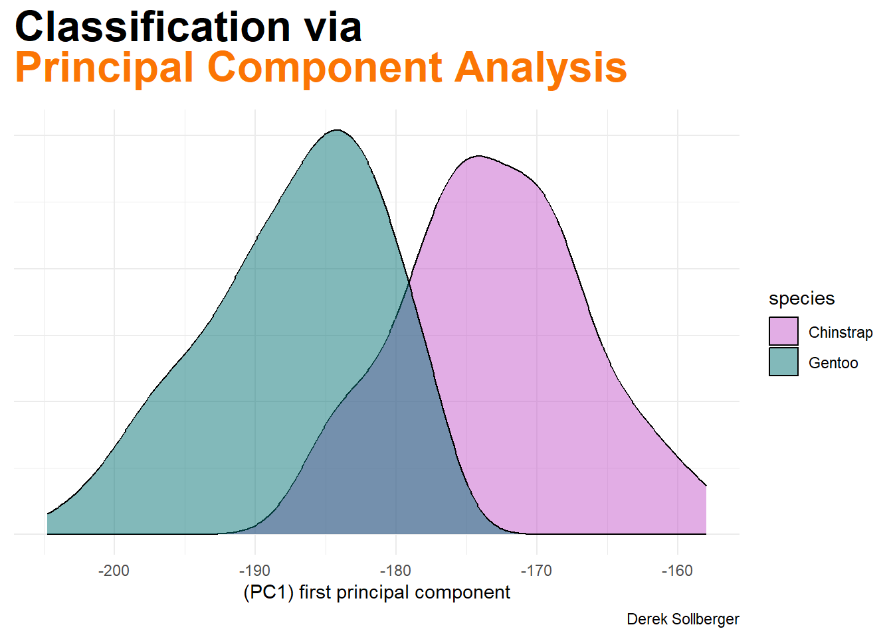
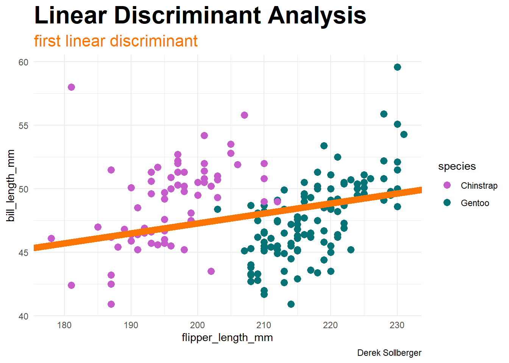
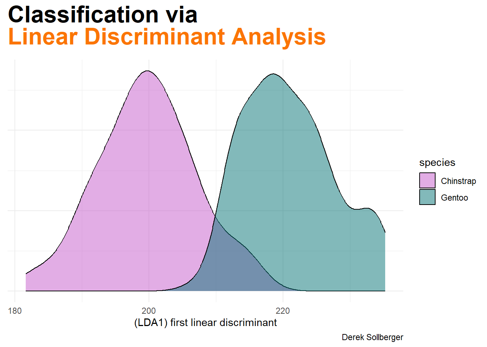

library("dplyr")
library("ggplot2")
library("ggtext")
library("palmerpenguins")
adelie_color = "#fb7504"
chinstrap_color = "#c65ccc"
gentoo_color = "#067476"Today, I am trying to replicate Figure 9.4 in Probabilistic Machine Learning by Kevin Murphy.
Data
Instead of the gender data, I will run classification on the Palmer Penguin data. Today’s experiments will be for classification between two classes.
penguin_2_class <- penguins |>
filter(species %in% c("Chinstrap", "Gentoo")) |>
na.omit()penguin_2_class |>
ggplot(aes(x = flipper_length_mm, y = bill_length_mm,
color = species)) +
geom_point(size = 3) +
labs(title = "Two Predictor Variables",
subtitle = "50mm-long bill and 195mm-long flipper",
caption = "Derek Sollberger") +
scale_color_manual(values = c(chinstrap_color, gentoo_color)) +
theme_minimal() +
theme(plot.title = element_markdown(face = "bold", size = 24),
plot.subtitle = element_markdown(size = 16))
train_set <- penguin_2_class |>
select(flipper_length_mm, bill_length_mm)Principal Component Analysis
Dimensionality reduction via principal component analysis (PCA) is available in base R.
pca_results <- prcomp(train_set, center = TRUE, scale. = TRUE)Here is some algebra to find a line parallel to the first principal component (and goes through the centroid)
del_x <- pca_results$rotation[1,1]
del_y <- pca_results$rotation[2,1]
pca_slope <- del_y / del_x
xbar <- mean(train_set$flipper_length_mm, na.rm = TRUE)
ybar <- mean(train_set$bill_length_mm, na.rm = TRUE)
pca_intercept <- ybar - pca_slope * xbarHere is a visualization of PC1, the first principal component direction.
penguin_2_class |>
ggplot(aes(x = flipper_length_mm, y = bill_length_mm)) +
geom_point(size = 3) +
geom_abline(slope = pca_slope, intercept = pca_intercept,
color = adelie_color, linewidth = 3) +
labs(title = "Principal Component Analysis",
subtitle = "<span style = 'color:#fb7504'>first principal component</span>",
caption = "Derek Sollberger") +
# scale_color_manual(values = c(chinstrap_color, gentoo_color)) +
theme_minimal() +
theme(plot.title = element_markdown(face = "bold", size = 24),
plot.subtitle = element_markdown(size = 16))
Now, we can project the data down into the one-dimensional space using matrix multiplication.
train_mat <- as.matrix(train_set)
proj_mat <- as.matrix(pca_results$rotation[,1])
projection_data <- train_mat %*% proj_mat
projection_df <- cbind(penguin_2_class, projection_data)Finally, let us look at the classification in the PC1 dimension.
projection_df |>
ggplot(aes(x = projection_data)) +
geom_density(aes(fill = species),
alpha = 0.5) +
labs(title = "Classification via <br><span style = 'color:#fb7504'>Principal Component Analysis</span>",
subtitle = "",
caption = "Derek Sollberger",
x = "(PC1) first principal component",
y = "") +
scale_fill_manual(values = c(chinstrap_color, gentoo_color)) +
theme_minimal() +
theme(axis.title.y = element_blank(),
axis.text.y = element_blank(),
axis.ticks.y = element_blank(),
plot.title = element_markdown(face = "bold", size = 24),
plot.subtitle = element_markdown(size = 16))
Linear Discriminant Analysis
Dimensionality reduction via linear discriminant analysis (LDA) is available in the MASS package.
lda_model <- MASS::lda(bill_length_mm ~ flipper_length_mm, data =
train_set)Here is some algebra to find a line parallel to the first linear discriminant (and goes through the centroid)
del_x <- 1
del_y <- lda_model$scaling[1,1]
lda_slope <- del_y / del_x
xbar <- mean(train_set$flipper_length_mm, na.rm = TRUE)
ybar <- mean(train_set$bill_length_mm, na.rm = TRUE)
lda_intercept <- ybar - lda_slope * xbarHere is a visualization of LDA1, the first linear discriminant.
penguin_2_class |>
ggplot(aes(x = flipper_length_mm, y = bill_length_mm,
color = species)) +
geom_point(size = 3) +
geom_abline(slope = lda_slope, intercept = lda_intercept,
color = adelie_color, linewidth = 3) +
labs(title = "Linear Discriminant Analysis",
subtitle = "<span style = 'color:#fb7504'>first linear discriminant</span>",
caption = "Derek Sollberger") +
scale_color_manual(values = c(chinstrap_color, gentoo_color)) +
theme_minimal() +
theme(plot.title = element_markdown(face = "bold", size = 24),
plot.subtitle = element_markdown(size = 16))
Now, we can project the data down into the one-dimensional space using matrix multiplication.
train_mat <- as.matrix(train_set)
proj_mat <- as.matrix(c(1, lda_model$scaling[1,1]))
projection_data <- train_mat %*% proj_mat
projection_df <- cbind(penguin_2_class, projection_data)Finally, let us look at the classification in the first linear discriminant.
projection_df |>
ggplot(aes(x = projection_data)) +
geom_density(aes(fill = species),
alpha = 0.5) +
labs(title = "Classification via <br><span style = 'color:#fb7504'>Linear Discriminant Analysis</span>",
subtitle = "",
caption = "Derek Sollberger",
x = "(LDA1) first linear discriminant",
y = "") +
scale_fill_manual(values = c(chinstrap_color, gentoo_color)) +
theme_minimal() +
theme(axis.title.y = element_blank(),
axis.text.y = element_blank(),
axis.ticks.y = element_blank(),
plot.title = element_markdown(face = "bold", size = 24),
plot.subtitle = element_markdown(size = 16))